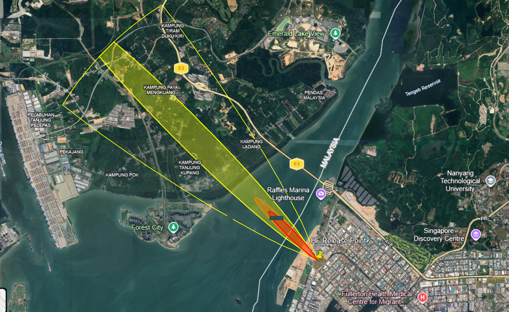
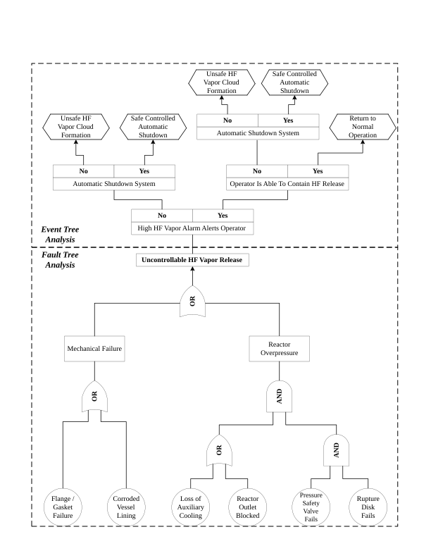
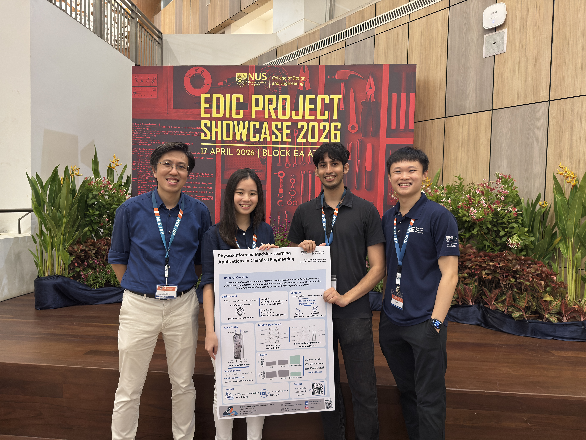
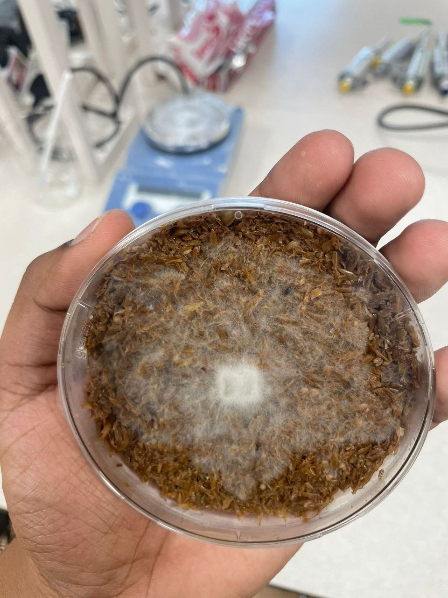
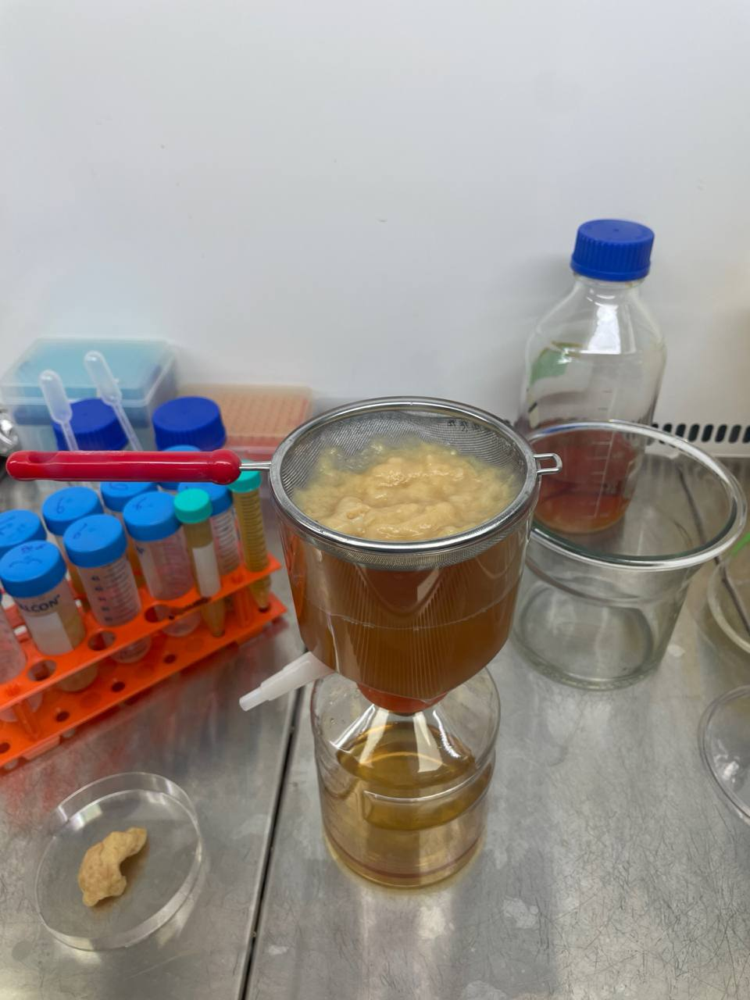
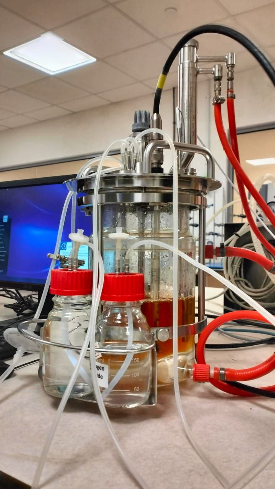
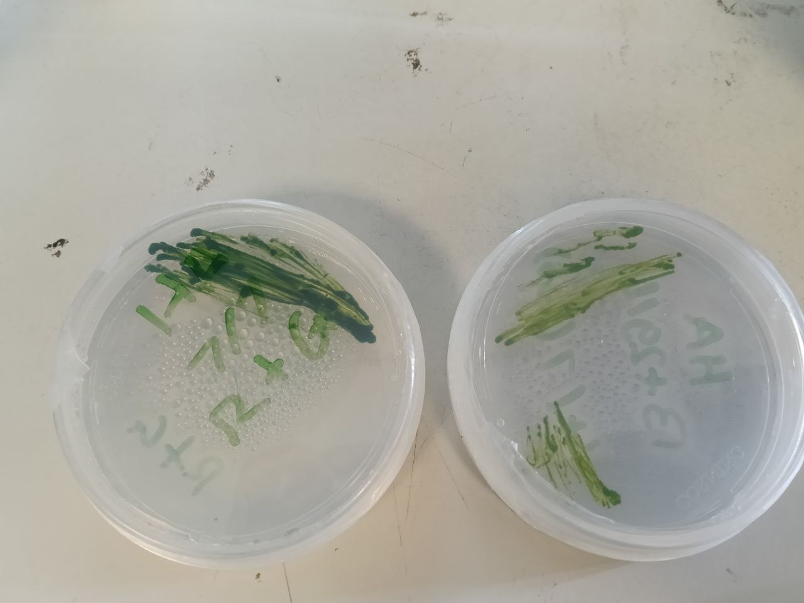
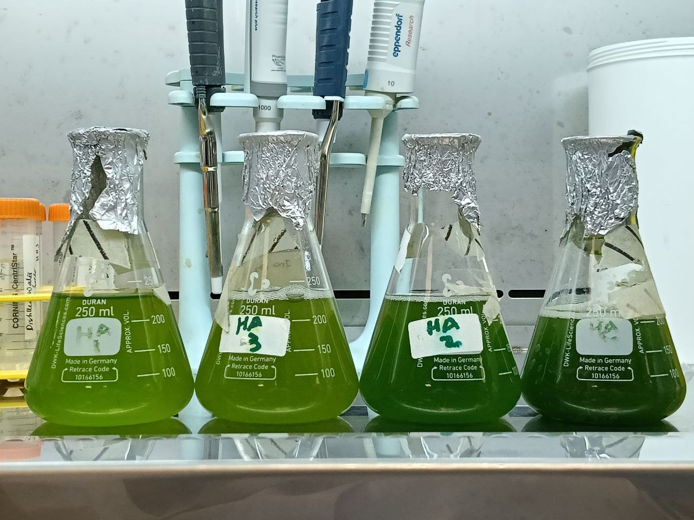
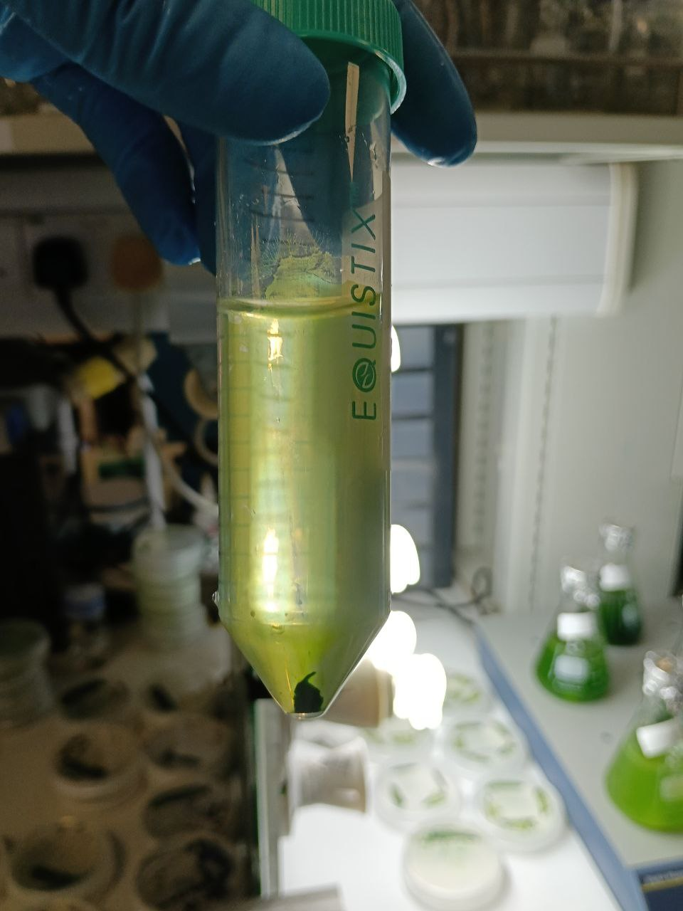

Projects I've
worked on
From practical engineering projects to sustainability themed research, here are some memorable and meaningful projects I've worked on.
Plant Design for the Production of 4-Isobutylacetophenone



As the Team leader for my Final Year Design Project (FYDP), my responsibility included coordinating team efforts by creating effective communication channels, coordinating meetings, and created a Gantt chart to ensure timely delivery of project components. Additionally, I had assessed each member's abilities and assigned them to work in critical parts of the project, namely:
Process Development and Simulation, Optimization and Heat Integration, Economic Analysis, Equipment Schedule, Reactor Design , Separation Processes and, Safety and Sustainability
Apart from supervising each component of the project, I had also worked extensively on the process development and simulation as well as the safety aspects of the project. I had conducted extensive research on existing patents, shortlisted viable options for the project, and developed a Process Flow Diagram (PFD). Subsequently, I had simulated the selected project using Aspen HYSYS to assess its performance and optimization studies using Genetic Algorithms in Python. Once the process was established, I had conducted a HAZOP study on our reactor and modelled the consequences of potential deviations using ALOHA (Areal Locations of Hazardous Atmospheres) software and a Bow-Tie Analysis.
Skills
Physics-Informed Machine Learning: Applications in Chemical Engineering



CO2 emissions remain a pressing problem due to its detrimental impact on the climate. One method of dealing with fugitive CO2 emissions is through the use of carbon capture methods, of which, CO2 absorption columns are typically used in industry. For the purposes of optimization and control, a model of the CO2 absorption column is needed. However, an accurate model of CO2 absorption columns is not readily available due to the complex interactions of mass transfer and chemical reactions that occur within the column that make it hard to model the concentration of CO2 in the outlet of the column.
Consequently, in this final year research project, our team have researched and developed a suite of Physics-Informed Machine Learning Models (PIML) to model the concentration of CO2 in the outlet of a pilot scale packed, counter-current, CO2 absorption column at different timestamps. We had collected 30 experimental data from the pilot column and developed Recurrent Neural Networks (RNN) and Neural Ordinary Differential Equations (NODEs) using PyTorch and integrate the governing equations of the packed column through the loss function.
With only 30 datapoints, we were able to obtain a reduction of around 15-20% in MSE via PIML models compared to their purely data-driven models highlighting that PIML models are a viable option for modelling a packed CO2 absorption column.
Skills
Water Remediation in Chiang Mai, Thailand


Led a water remediation project in Chiang Mai focused on improving a quarry lake’s odor and water quality amid language, cultural, and technical constraints. To define the problem, my team and I ran an ethnographic study with the surrounding community and traced the lake’s history and current pain points, including unsafe fish consumption and a strong odor during dry periods. Based on field insights and research on quarry-lake pollution, I hypothesized the smell was driven by anaerobic decomposition of organic waste producing methane, and proposed an aeration system as a practical solution.
With uncertain depth reports, I built a simple depth-measuring rig (weighted rope with 1 m markers), measured the lake, then sized the pump using fluid dynamics calculations with an added safety factor. I sourced the pump and components, coordinated fabrication and installation with local contractors using Google Translate , and monitored results post-deployment. Within a few weeks, residents reported a noticeable reduction in odor, and we documented the project with Thai-language posters for community awareness.
This project was a valuable lesson in applying engineering principles in a real-world context with limited resources, while navigating language and cultural barriers. It reinforced the importance of community engagement, adaptability, and practical problem-solving in engineering work.
Skills
Mycoprotein Fermentation on Brewer's Spent Grains (BSG)



I led a research project focused on producing mycoprotein by fermenting acid‑hydrolysed brewer’s spent grains (BSG) with Neurospora crassa, exploring a practical way to upcycle an abundant food-industry byproduct into a higher-value, protein-rich ingredient. Over the course of the project, I owned the end-to-end experimental direction—from framing the key technical questions to translating them into controlled, repeatable lab trials.
To identify robust growth conditions, I devised and executed a structured series of experiments to evaluate how process variables impacted fungal growth and overall product quality. This included standardising substrate preparation and hydrolysis, running autoclave-based cultivation with careful contamination control, and iterating protocols based on observed outcomes across multiple runs.
To validate results beyond the lab, I coordinated international transportation of mycoprotein samples for external compositional analysis (protein, carbohydrate, and fibre). The work was recognised with the Judges’ Choice Award at the NUS ORMC Environmental Risk Challenge 2024, reflecting both the project’s technical merit and its sustainability-driven impact.
Skills
Cultivation of Chlorella vulgaris with glycerol



I investigated the cultivation of Chlorella vulgaris under different carbon-source conditions to understand how growth mode impacts biomass productivity—an important lever for scaling microalgae toward applications like biofuels. Under autotrophic conditions (R media only), the culture followed the expected triphasic growth pattern and reached a modest final biomass after 14 days. In contrast, adding glucose enabled mixotrophic growth and produced a step-change improvement in performance, sustaining rapid growth and delivering substantially higher biomass yields than autotrophy.
I also evaluated glycerol as a lower-cost alternative carbon source and found a clear dose-dependent effect, with the best results at moderate concentrations. While glycerol supported mixotrophic growth, it was noticeably less effective than glucose—likely due to additional metabolic conversion steps—yet it remains attractive from a sustainability and cost standpoint. Because glycerol is a common biodiesel byproduct and carbon sources can be a major driver of media cost, these findings point to a practical pathway for improving biomass productivity while leveraging an existing waste stream.
Skills
Autonomous Food Delivery System
As part of my capstone project, I built an autonomous food delivery system made up of two cooperating robots: a Dispenser robot and a Delivery robot. The Dispenser robot serves as the ordering and handoff station where users can load a soda can, select a table number via a keypad-display module, and the system triggers dispensing when the Delivery robot is available. My contributions focused on the Dispenser robot’s control and communication stack: I wrote C code to drive the dispensing motor mechanism, implemented the keypad + display workflow for capturing orders, and an integrated MQTT messaging to publish the selected table number to the Delivery robot.
The Delivery robot, implemented on a modified Turtlebot3 platform, receives the table-number command, collects the can from the Dispenser, autonomously navigates to the correct table, pauses for pickup, and then returns to the Dispenser station to await the next order. Together, the two-robot setup demonstrates a complete “order → dispense → deliver → return” loop using embedded control, user I/O, and robot-to-robot coordination.
Skills